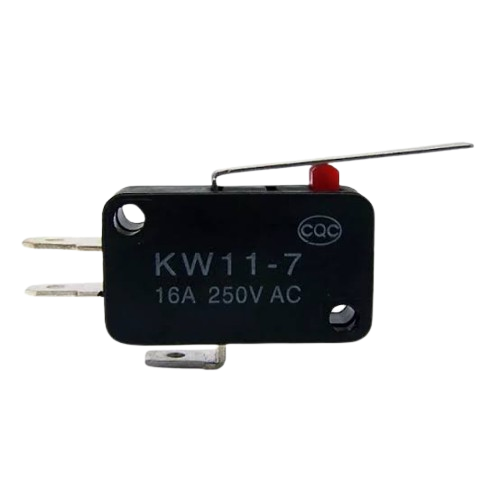

Sensor fim de curso
O que é uma Chave Fim de Curso?
A chave fim de curso, também conhecida como sensor fim de curso, interruptor mecânico ou microswitchk é um dispositivo eletromecânico projetado para detectar a presença, a passagem ou a posição limite de um objeto em movimento.
Em termos simples: ela funciona como um "botão de parada ou acionamento automático" que avisa o sistema quando uma peça móvel chegou exatamente onde deveria chegar.
Como Ela Funciona?
O funcionamento é puramente mecânico e elétrico:
✦Impacto Físico: Uma peça móvel (como o portão da sua casa, o carrinho de uma impressora 3D ou um braço robótico) encosta no atuador da chave.
✦Comutação de Contatos: Esse toque físico exerce uma força que altera o estado dos contatos elétricos internos da chave:
⋆O contato Normalmente Aberto (NA) se fecha, permitindo a passagem de corrente.
⋆O contato Normalmente Fechado (NF) se abre, cortando o fluxo elétrico.
✦Ação no Sistema: O circuito acionado pode desligar o motor de imediato (para evitar travamentos ou queima), reverter a direção do movimento ou enviar um sinal elétrico para uma placa controladora (como Arduino, CLP ou CNC).
Principais Componentes e Tipos de Atuadores
A chave é composta por Caixa (de plástico para uso leve/Maker ou metálica para uso industrial pesado), Contatos Elétricos e o Atuador (a parte que recebe o impacto). Os atuadores mudam conforme a necessidade do projeto:
✦Pino ou Pistão Reto: Usado quando a peça móvel vai direto contra o fim de curso, em distâncias curtas.
✦Pino com Rolete: Possui uma pequena rodinha na ponta. É ideal para quando a peça passa deslizando lateralmente sobre ele.
✦Haste ou Alavanca com Rolete: Permite acionar a chave mesmo que o objeto venha de direções ligeiramente variadas ou em distâncias maiores.
✦Haste Flexível (Mola): Curva-se em qualquer direção, muito útil quando o impacto é irregular ou multidirecional.
✦Atuador Separado (Chave de Segurança): Usado em portas e grades de proteção industrial; o circuito só funciona se a trava estiver totalmente encaixada.
Vantagens e Principais Aplicações
Por ser um componente simples, de baixo custo e extremamente durável (suportando de 1 a 10 milhões de acionamentos), o fim de curso é amplamente utilizado em:
✦Portões Eletrônicos: Para desligar o motor exatamente quando o portão abre ou fecha totalmente.
✦Projetos Maker e Robótica: Em impressoras 3D e máquinas CNC para determinar o "ponto zero" (home) dos eixos X, Y e Z.
✦Indústria e Automação: Em pontes rolantes, esteiras rolantes, elevadores e máquinas operatrizes para evitar colisões e padronizar o fluxo de produção.
✦Segurança: Em portas de proteção de máquinas pesadas, impedindo que funcionem com a tampa aberta.
